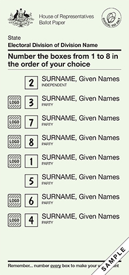

Hopefully, you now understand how your vote is used to choose the government; you've made sure you're enrolled; and you know where and when to vote. Now, how on earth do you fill out the ballot papers?
When you go to vote, you will most likely be handed cards by volunteers for political parties, telling you ‘how to vote’ for them. Ignore them.
Some people get the idea that their vote is somehow invalid or wrong because they haven't followed these cards, but they are merely the preferences the parties want you to put after them.
If you want to vote for a particular party, you only have to put their candidate first; anything after that is up to you. Remember, you can preference the candidates in any order of your choosing.
Don't know who to pick? The next parts of this election guide will acquaint you with the people and parties contesting this election, so that come election day, you'll come in with your very own ‘how-to-vote’ card with your informed choices on it.

This one is pretty simple, and usually more like a receipt in size.
Number all the candidates according to your preferred order, with your most preferred candidate as 1. Don't overthink it – unlike in the U.S. or U.K., there's no need (or reason) to be ‘strategic’ with your vote, and you can't ‘waste’ it either, since your vote will always flow to another candidate. Nice and simple.
The person with the least first preference votes is eliminated, and their votes distributed to other candidates according to the second preferences of those votes. The process is repeated until a candidate has more than 50% of the vote and thus wins.
This shit usually looks like a whole motherfucking table cloth with 6,969 different squares you can pick, as a consequence of each state and territory electing multiple senators.
Thankfully, unlike the House of Representatives paper, you don't have to number every single candidate, and you've got two ways of voting: by party (above the line) or by candidate (below the line). You number at least six or twelve of the options, respectively, in your preferred order. It's pretty simple.
You might sometimes hear that below the line voting is better than above the line voting, but the reasons why have largely disappeared since the 2016 election. Nowadays, the only reason to vote below the line is if you'd like to preference an independent candidate; independents don't belong to parties, and generally can't be preferenced above the line (though sometimes a few team up to appear as a nameless group).
Also note that you're only voting to pick roughly six senators; half of the Senate is elected every three years, so that rather than electing them all in one go every six years, the Australian public get to vote on the Senate every three years as well.
You have two pieces of paper to fill out. The green paper elects the House of Representatives and will decide the government. You must number all the boxes.
The
{kind=link}